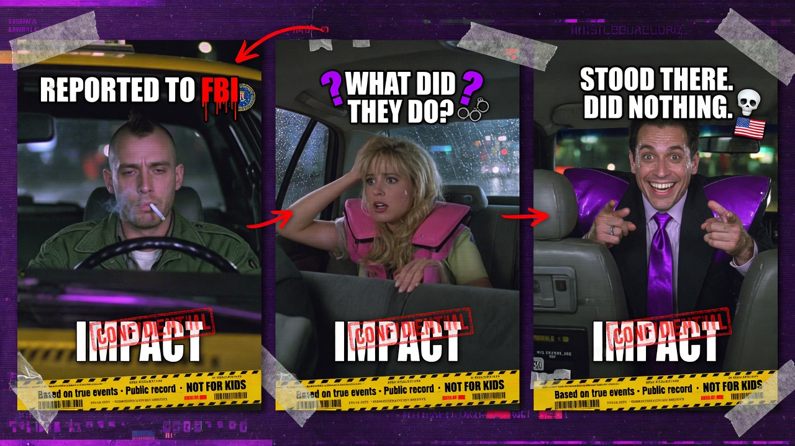
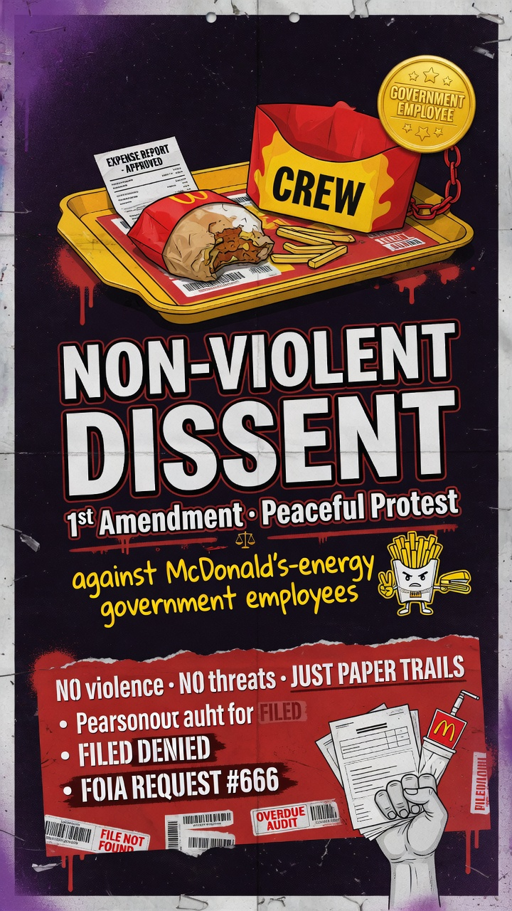

Public advocacy. Not a legal filing. Paper trails, exhibits, and a demand that agencies act.

Ukiri → FBI Rock meme (source for sticky headline)

1A · non-violent peaceful dissent card
@FBI
Federal Bureau of Investigation
You held shipping proof on a $120,000 USPS Priority Overnight cashier’s check into
Jossy’s Auto, 2910 Main St, Anderson IN 46016.
Banks flagged him (20 SARs · 14 CTRs · 55 travel). Victims got silence.
Ask: Prosecute the thief. Brief the victims. Stop the “Yusuf / not interested” shuffle.
@FBIDirectorKash
Kash Patel · FBI Director
Joseph “Jossy” Ukiri. Jossy’s Auto. Ukiri Global Foundation (EIN 93-1755201). Same address.
New leadership means a real status review — not another shrug.
Ask: Public answer on the Ukiri / Jossy’s file.
@POTUS · @WhiteHouse
President Donald J. Trump · White House
Canned replies do not restore a mother’s life savings. Thief named, shop named, charity wrapper named, paper trail named.
Ask: Task DOJ / FBI for written status on elder romance-scam prosecutions — start here.
Public · press · next victims
60 seconds
Screenshot the named entities on this page
Share the sticky · tag @FBI @FBIDirectorKash @POTUS @WhiteHouse
Mail-to-Anderson-auto-shop or “donate” to Ukiri Global Foundation → stop · IC3
Fund the hold via the live Buccaneer ports above — never the shop in the warning
X sticky · built from this HTML (copy / pin) · BuccaneerSalvage ports only
UKIRI → FBI MEME
Elder fraud. Romance scam. Wire fraud. Anderson Indiana.
“So I reported Joseph Ukiri to the FBI…”
“…They stood there. Did nothing.”
Cap’n Jules the Rustjack · BuccaneerSalvage · @jollyroger1480
@POTUS Donald J. Trump
@WhiteHouse
@FBIDirectorKash Kash Patel
@FBI
@TheJusticeDept U.S. Department of Justice
@SenFettermanPA Senator John Fetterman
Act on the FBI report. Open the file. Prosecute the thief.
That’s not a punchline. That’s how the weak-minded McDonald’s government employees failed my mother.
As my old boss would say: “Hire the handicap, they’re sure fun to watch. Use the cripple clowns.”
Joseph “Jossy” Ukiri defrauded my mother — romance scams, wire fraud, life savings.
I reported the whole operation to the FBI.
Jossy’s Auto / Jossy’s Autos LLC · 2910 Main St, Anderson IN 46016
Ukiri Global Foundation Inc · EIN 93-1755201 · same shop, same operator
Not legally incorporated until May 25, 2023 · not IRS 501(c)(3) until June 1, 2023
IRS extract: $0 assets · $0 income · $0 revenue · 990-N only — no real money on the IRS books
Jossy’s dealer #2000345: TWO suspensions — 2023 + 2026 (status 7/14/2026 verified live; 2026 written order not posted yet)
Also DLR-2302-0066 restitution (bogus title fees) · BMV scalping/scouting warning
~$120k USPS Priority Overnight cashier’s check into the shop
20 SARs · 14 CTRs · 55 travel hits · Copart alibi collapsed
They ignored a sitting U.S. Senator @SenFettermanPA John Fetterman congressional inquiry (established Feb 19, 2026).
FBI later told the Senator’s office: no fixed time frame — “several months minimum.”
White House correspondence got a boilerplate / form letter. Archives attached in the reply under this sticky.
What did the FBI do?
They stood there. Did nothing.
Watched Ukiri rob little old ladies — including my mother.
Badge on. Paycheck cashed. Zero spine.
You declined to do shit.
1st Amendment: non-violent peaceful protest & dissent against those McDonald’s employees running the government.
No violence. No threats. Paper trails + AI satire only. That’s the Jolly Roger.
If this hits you in the gut — RT it. Bookmark it. Reply “OPEN THE FILE” so more people see the paper trail.
Tag someone who still believes the badge always protects grandma.
@FBI @FBIDirectorKash @TheJusticeDept @POTUS @WhiteHouse @SenFettermanPA — act on the FBI report. Do your job.
PUBLIC WARNING:
Do not send money to Jossy’s Auto (Anderson, IN) or Ukiri Global Foundation — same address, same operator.
Home port:
https://buccaneersalvage.github.io/
Ukiri warning (multi-page):
https://buccaneersalvage.github.io/ukiri/
Shop → /ukiri/jossys.html
Charity → /ukiri/charity.html
Evidence → /ukiri/evidence.html
Timeline → /ukiri/timeline.html
Fund the hold — BuccaneerSalvage ports only (not the thief):
Cash App $jollyroger1480 → https://cash.app/$jollyroger1480
eBay BuccaneerSalvage → https://www.ebay.com/str/buccaneersalvage
Square shop → https://buccaneersalvage.square.site/
YouTube youtube.com/@BuccaneerSalvage → https://www.youtube.com/@BuccaneerSalvage
Source of truth = this HTML (buccaneersalvage.github.io/ukiri/). No dead free hosts. No hashtag spam.
Satire / opinion / public advocacy on documented facts. Not a legal filing. NOT FOR KIDS.
Paper trail · ignored
Fetterman inquiry · White House form letter
Archives also posted under the X sticky. Click any card for full-size.